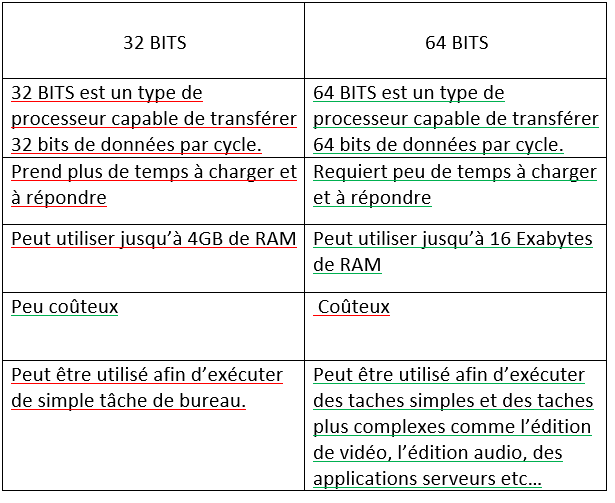

Veille technologique
Définition d'une veille technologique
La veille technologique ou veille scientifique et technique consiste à s'informer de façon systématique sur les techniques les plus récentes et surtout sur leur mise à disposition commerciale (ce qui constitue la différence entre la technique et la technologie). Cette activité met en œuvre des techniques d'acquisition, de stockage et d'analyse d'informations et leur distribution automatique aux différentes sections concernées de l'entreprise, à la manière d'une revue de presse. Ces informations peuvent concerner une matière première, un produit, un composant, un procédé, l'état de l'art et l'évolution de l'environnement scientifique, technique, industriel ou commercial de l'entreprise.
Comment trouver sa veille ?
Afin de trouver ma veille j'ai utiliser un outil qui permet de collecter diverses informations en rapport avec la technologie : le flux RSS , Cet outil permet d'avoir un 'fil' d'information continu sur le domaine que l'on cherche. Il existe plusieurs agrégateur de flux RSS, pour ma part j'ai choisi Feedly.Vu que les informations ne reste pas statique, la veille risque de changer c'est pour cela qu'on la décompose en 3 cycles.
1er Cycle : Microsoft visual Studio 2022
j'ai pris Microsoft visual Studio 2022 comme sujet pour ma veille car c'est un logiciel qu'on utilise beaucoup que ce soit en classe ou dans le monde du développement. Nous allons voir les nouveautés qu'apportent Microsoft Visual Studio par rapport à son prédecesseur
de 32 bits à 64 bits

rechargement à chaud

Améliorations apportées à IntelliCode
saisie semi-automatique de la ligne : dans Visual Studio 2022, la fonctionnalité IntelliCode peut désormais exécuter automatiquement le code jusqu’à une ligne complète à la fois. recommandations relatives aux Actions rapides: nouveauté de Visual Studio 2022 Preview 4, IntelliCode peut à présent être utilisé lorsque vous effectuez une tâche courante et que vous recommandez l' Action rapide appropriée, en la complétant au fur et à mesure de vos frappes.
2ème et 3ème Cycle : Les NFT (Non-Fungible Token)
Après la sortie de Microsoft Visual Studio 2022, il n'y avait pas grand chose de nouveau à part des petits correctifs de version, j'ai décidé alors de changer de sujet . à l'aide de Feedly et des recherche sur internet , je me suis intéréssé à une nouvelle technologie : les NFT .
Définition des NFT
NFT signifie jetons non fongibles. Partons de zéro : que signifie être irremplaçable ? L'adjectif « fongible » est un terme économique désignant une marchandise ou un bien qui peut être échangé contre une autre marchandise ou un autre bien de même valeur. Par exemple, un billet d'un dollar est fongible car il peut facilement être échangé contre un autre billet d'un dollar de valeur égale. Les objets "irremplaçables" ne peuvent pas être échangés contre quelque chose de valeur égale. Un terrain est irremplaçable car chaque terrain a ses propres caractéristiques et il serait difficile, voire impossible, de trouver un autre terrain d'exactement la même valeur. L'art est un autre exemple d'actif non fongible car sa valeur est très subjective. C'est là qu'interviennent les NFT.
Les NFT garantissent la propriété exclusive des actifs numériques (par exemple, les illustrations, les achats dans les jeux vidéo ou les tweets — oui, les tweets !). Vous pouvez acheter un NFT pour un certain prix, mais il n'est pas fongible, donc sa valeur marchande fluctue.
Est-ce que le NFT est une cryptomonnaie?
Non, les NFT ne sont pas des crypto-monnaies et il est important de faire la distinction entre les deux. Prenez les crypto-monnaies comme Bitcoin par exemple. Bitcoin est un jeton qui représente des informations spécifiques et attribue une valeur spécifique. Comme un ticket de bus, le Bitcoin est fongible, ce qui signifie qu'il peut être échangé contre un autre Bitcoin et conserver la même valeur. Les jetons non fongibles, tels que les NFT, ne sont pas fongibles car ils sont associés à des actifs numériques et ne peuvent pas être remplacés. En d'autres termes, ils sont uniques et n'ont pas la même valeur. De plus, ils sont soumis à la volatilité des marchés. En revanche, ils peuvent être donnés, échangés ou vendus.
Effet de mode?
Ce serait mentir que de dire que les NFTs ne sont pas une mode. Mais pour autant, leur impact ne serait-il pas durable ? On peut affirmer sans conteste qu’ils opèrent une véritable révolution et ce dans plusieurs domaines : Premièrement, sur la notion d’authenticité. Avec les NFTs, il n’y a plus de doute : on peut facilement retracer une œuvre à l’instar des œuvres traditionnelles. Deuxièmement, en donnant la possibilité aux collectionneurs d’avoir un bien unique, les artistes numériques peuvent se permettre d’entrevoir le futur et de vivre de leur art .Troisièmement, les collectionneurs des NFT donnent une visibilité nouvelle à une esthétique qui n’a plus besoin d’être approuvée par les curateurs et les critiques d’art.